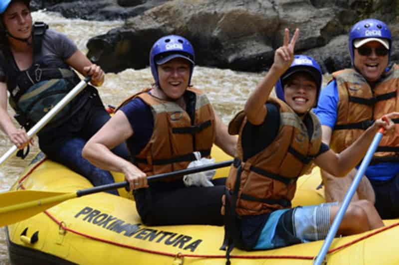

Objetivo
Proporcionar experiências inesquecíveis de rafting e aventura ao ar livre, conectando pessoas à
natureza com
segurança,
emoção e espírito de equipe.
Missão
Oferecer atividades de rafting com excelência, promovendo diversão, superação pessoal e respeito ao
meio
ambiente,
enquanto criamos memórias marcantes para aventureiros de todos os níveis.